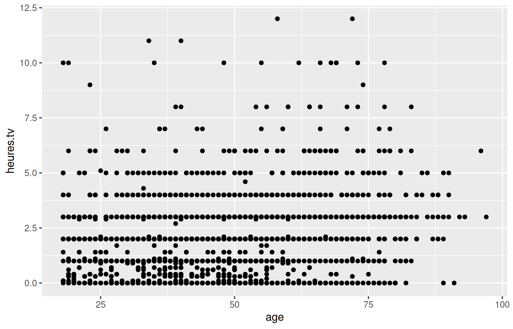
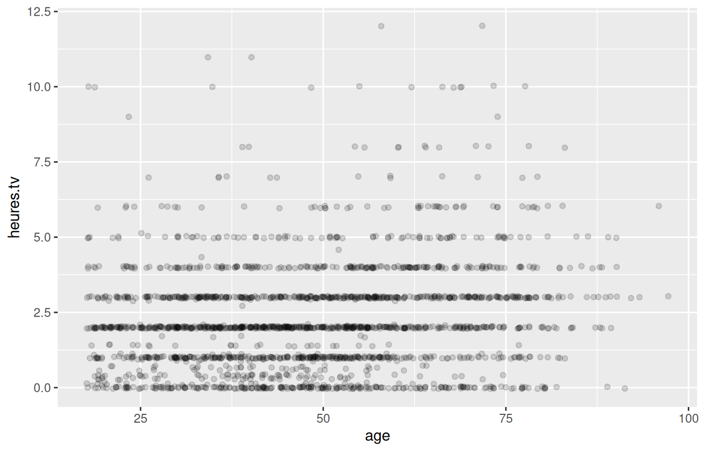

Projet : une analyse complète
L3 économie-finance
Reprise de la séance 4
Un graphique trompeur
Qu’est-ce que ce graphique cache ou exagère ? Comment le corriger ?
10 minutes de discussion en binômes, puis correction collective au tableau. 2000 points sans transparence : la densité réelle est invisible, tout semble uniformément réparti.
Correction
ggplot(d) + geom_jitter(aes(x = age, y = heures.tv), alpha = 0.15)
Important
Sans transparence ni décalage, les points se superposent exactement : on ne voit pas où se concentrent réellement les enquêtés. geom_jitter() et alpha révèlent la densité que le premier graphique cachait.
Aujourd’hui
Le déroulé
- 30 minutes : consignes et rappels
- 2 heures : vous travaillez, je passe vous voir
- 30 minutes : quelques-uns montrent un résultat
Le travail se fait ici. Ce que vous n’aurez pas fini sera à terminer chez vous.
Ce qui est attendu
Un script R commenté qui répond à deux ou trois questions de votre choix sur l’enquête Histoires de vie.
Pour chaque question :
- la question, écrite en français, en commentaire
- le code qui y répond
- au moins un tableau ou un graphique
- une phrase disant ce que vous y lisez
Ce que vous savez faire
Manipuler un tableau
| Verbe | Ce qu’il fait |
|---|---|
select() |
choisit des colonnes |
filter() |
choisit des lignes |
arrange() |
trie les lignes |
mutate() |
crée ou modifie une colonne |
d |>
filter(age < 30) |>
select(age, sexe, qualif) |>
arrange(age)Décrire
| Fonction | Ce qu’elle fait |
|---|---|
summarise() |
calcule des indicateurs |
count() |
compte les modalités |
group_by() |
découpe en groupes |
n() |
donne l’effectif du groupe |
d |>
group_by(qualif) |>
summarise(
effectif = n(),
age_moyen = mean(age)
) |>
arrange(desc(age_moyen))Représenter
| Géométrie | Pour quoi |
|---|---|
geom_histogram() |
distribution d’une variable quantitative |
geom_bar() |
effectifs d’une variable qualitative |
geom_point(), geom_jitter() |
deux variables quantitatives |
geom_boxplot() |
une quantitative selon une qualitative |
facet_wrap() |
le même graphique par groupe |
ggplot(d) +
geom_boxplot(aes(x = heures.tv, y = qualif)) +
labs(x = "Heures de télévision par jour", y = NULL)Choisir ses questions
Une bonne question
- Elle porte sur des variables qui existent dans le jeu de données.
- Elle est assez précise pour qu’on sache quel calcul faire.
- Elle a une réponse vérifiable : un chiffre, une comparaison, une forme.
| Trop vague | Utilisable |
|---|---|
| « Étudier les loisirs » | « Les cadres lisent-ils plus de bandes dessinées que les ouvriers ? » |
| « Analyser la télévision » | « Le temps passé devant la télévision diminue-t-il avec le niveau d’études ? » |
| « Voir les différences hommes-femmes » | « À âge et catégorie sociale comparables, les femmes déclarent-elles moins pratiquer un sport ? » |
Si vous ne savez pas par où commencer
- Qui pratique un sport ? Est-ce lié à l’âge, au diplôme, à la catégorie sociale ?
- Le sentiment d’appartenance à une classe sociale (
clso) varie-t-il selon la qualification ? - Le nombre de frères et sœurs est-il lié à la pratique religieuse (
relig) ? - Qui déclare que le travail est important (
trav.imp) ? Et qui en est satisfait (trav.satisf) ? - Les activités de loisir (
cuisine,bricol,peche.chasse,cinema) se répartissent-elles différemment selon le sexe ?
Prenez-en une, et posez-vous ensuite la question qui vient naturellement après.
Écrivez-les d’abord
Important
Écrivez vos deux ou trois questions en français, dans votre script, avant d’écrire la moindre ligne de code.
Sinon, vous produirez des calculs sans savoir ce que vous cherchez, et vous ne saurez pas dire si le résultat est bon.
Écrire le script
Structure
# Projet M3P — Prénom Nom — numéro d'étudiant
# Analyse de l'enquête Histoires de vie 2003
# Préparation ------------------------------------------------
library(tidyverse)
library(questionr)
data(hdv2003)
d <- as_tibble(hdv2003)
# Question 1 : les cadres regardent-ils moins la télévision ? ----
# ...
# Question 2 : ... ----
# ...Les sections
Un commentaire terminé par au moins quatre tirets crée une section :
# Question 1 : la pratique sportive selon l'âge ----- RStudio affiche alors un plan navigable, en bas à gauche de la fenêtre du script.
Ctrl + Shift + Oaffiche ou masque ce plan.- Cela ne change rien à l’exécution : ce sont des commentaires ordinaires.
Une section par question. C’est ce qui rend un script lisible – par moi, et par vous dans trois semaines.
Commenter utilement
Astuce
Commentez ce que vous cherchez et ce que vous trouvez, pas ce que fait la ligne.
# Inutile
# calcule la moyenne
mean(d$age)
# Utile
# On écarte les 5 non-répondants sur les heures de télévision.
# La moyenne porte donc sur 1995 personnes.
d |> summarise(
effectif = sum(!is.na(heures.tv)),
moyenne = mean(heures.tv, na.rm = TRUE)
)Les réflexes
- Prédisez l’ordre de grandeur avant de lancer le calcul. Un résultat qui surprend est soit une découverte, soit une erreur.
- Affichez l’effectif à côté de chaque indicateur. Une moyenne sur six personnes ne se compare pas à une moyenne sur huit cents.
- Nommez vos axes.
heures.tvn’est pas un titre d’axe. - Relancez tout depuis le début avant de rendre :
Ctrl + Shift + F10puis exécutez le script en entier. Il doit tourner sans erreurs sur une session vierge.
Quand vous êtes bloqué
- Lisez la dernière ligne du message d’erreur. Le nom entre guillemets est presque toujours la faute.
- Ouvrez l’aide :
?nom_de_la_fonction, et regardez la rubrique Examples tout en bas. - Réduisez le problème. Testez sur deux ou trois lignes plutôt que sur les 2000.
- Demandez à votre voisin, puis à moi.
Le point 3 est le plus efficace.
Rendu
Ce que vous déposez
Un fichier .R, nommé Nom_Prenom.R, déposé sur Moodle.
Il doit :
- S’exécuter en entier, sans erreurs, sur une session vierge
- Contenir vos questions écrites en français
- Produire au moins deux graphiques nommés
- Contenir vos commentaires de lecture des résultats
Critères
| Critère | Ce que je regarde |
|---|---|
| Le script tourne | exécution complète sans erreurs |
| Questions | Posées explicitement, précises |
| Pertinence | Le calcul répond bien à la question posée |
| Prudence | Effectifs affichés, valeurs manquantes traitées |
| Graphiques | Lisibles, axes nommés |
| Lecture | Une phrase de commentaire par résultat |
Note
Deux questions bien traitées valent mieux que cinq survolées.
Pour aller plus loin
RStudio sait transformer un script en document, sans rien apprendre de nouveau : les lignes commençant par #' sont interprétées comme du texte.
#' # Analyse de la pratique sportive
#'
#' On commence par regarder la répartition par sexe.
d |> count(sport, sexe)Ctrl + Shift + K produit alors un document HTML mêlant texte, code et résultats.
Note
C’est facultatif, et cela ne rapporte rien de plus. Mais si le mécanisme vous intéresse, c’est le point d’entrée vers Quarto et les documents reproductibles.
Au travail
Les deux heures qui viennent
- Écrivez vos questions. Montrez-les-moi avant de commencer à coder.
- Travaillez seul, mais parlez à vos voisins quand vous bloquez.
- Je passe entre les rangs.
Dans deux heures, quelques-uns d’entre vous montreront un graphique et diront ce qu’ils y lisent.
Et après ce cours
Vous savez maintenant charger des données, les décrire, les représenter et rendre un travail reproductible.
- Vous retrouverez ces outils en économétrie, en séries temporelles et dans votre projet tutoré.
- Les leçons swirl facultatives restent disponibles si vous voulez aller plus loin : conditions, boucles, écriture de fonctions, tirages aléatoires… Voir
LECONS_OPTIONNELLES.mdpour la liste complète. - Le manuel de Julien Barnier, Introduction à R et au tidyverse, couvre largement ce que nous n’avons pas eu le temps d’aborder.
Et si vous vous faites aider par un assistant IA, vous avez désormais de quoi juger ce qu’il vous répond.